The student journey, drawn to scaleمسیر یادگیرنده، بهمقیاس ترسیمشده
Interactive dialysis education — vendor-neutral, on-premise, bilingual EN / فارسی. Every colored element below is a real feature in the live demo, drawn with the platform's clinical-infographic grammar: real anatomy, real trial data, a real site graph.آموزش تعاملی دیالیز — مستقل از سازنده، درونسازمانی، دوزبانه. هر عنصر رنگی، یک قابلیت واقعی در نسخهٔ زنده است؛ با گرامر اینفوگرافیک بالینی پلتفرم ترسیم شده: آناتومی واقعی، دادهٔ واقعی کارآزمایی، و گراف واقعی سایت.
One path, seven stopsیک مسیر، هفت ایستگاه
Placement grants entry credit only — not masteryآزمون تعیین سطح فقط اعتبار ورود میدهد — نه تسلط
My Path ↗مسیر من ↗ C1–C6 · depth dialدرجهٔ عمقWhat you'll actually learnآنچه واقعاً یاد میگیرید
real schematics from the course — not stock artشماتیکهای واقعی دوره — نه تصویر آماده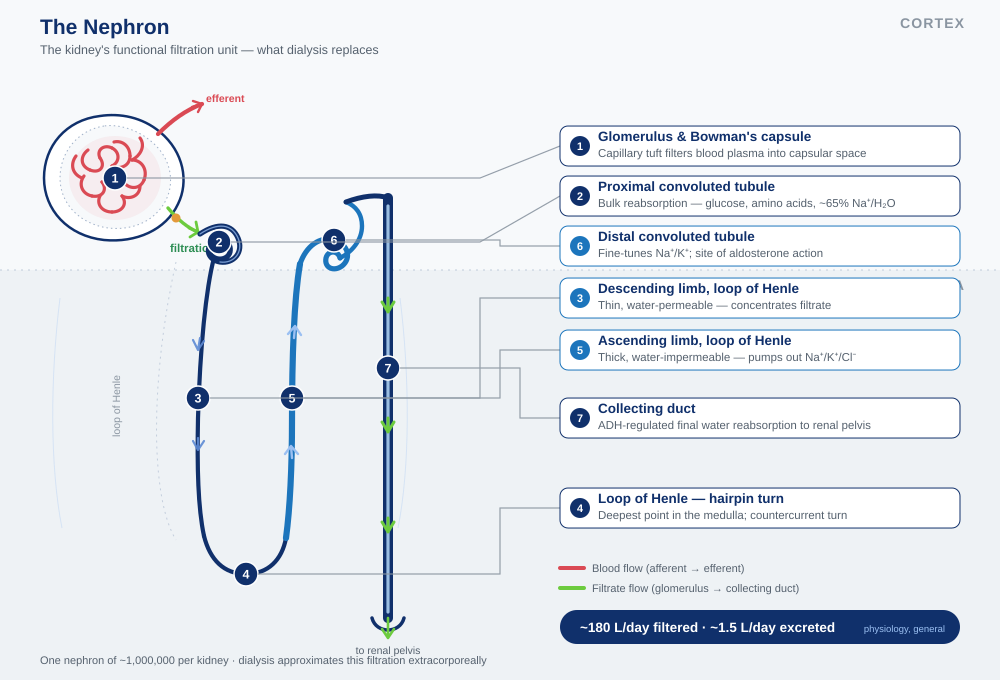
The nephron is the filtering unit dialysis stands in for. C1 orients learners on where clearance normally happens before the therapy is introduced.نفرون واحد فیلترکنندهٔ کلیه است که دیالیز جای آن را میگیرد. C1 پیش از معرفی درمان، یادگیرنده را با محل طبیعی پاکسازی آشنا میکند.
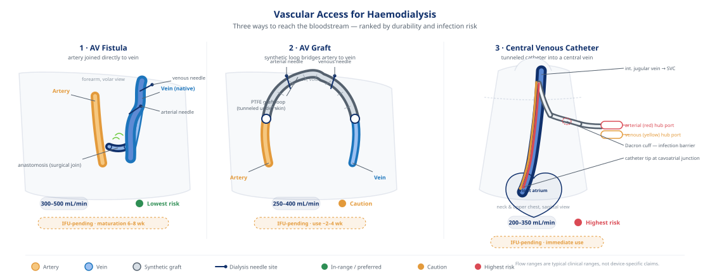
Fistula vs graft vs CVC — flow reaches 300–500 mL/min on a mature fistula, the lowest-risk access Representative range — not device-specific. The trade-offs are spatial, so they're drawn, not tabulated.فیستول در برابر گرافت و کاتتر — جریان روی فیستول رسیده به ۳۰۰–۵۰۰ mL/min میرسد، کمخطرترین دسترسی بازهٔ نمونه — غیراختصاصی به دستگاه. مصالحهها فضاییاند، پس ترسیم شدهاند نه جدولبندی.
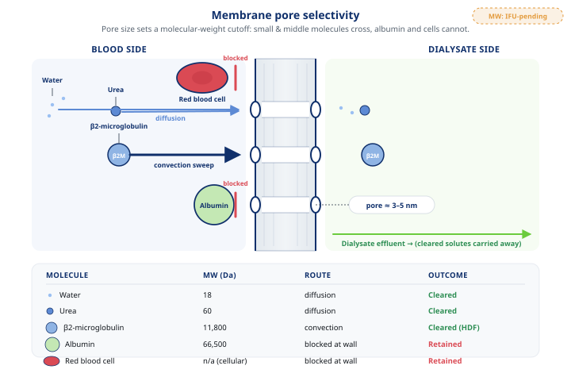
Pore size sets the cutoff. Urea crosses by diffusion; β2-microglobulin only clears with the convection sweep HDF adds — the mechanism behind the evidence below.اندازهٔ منفذ حد جداسازی را تعیین میکند. اوره با انتشار عبور میکند؛ β2-microglobulin فقط با جاروب همرفتی که HDF میافزاید پاک میشود — سازوکار پشت شواهد زیر.
Where the doing happensجایی که انجامدادن رخ میدهد
inside each competency hub — not separate tabsدرون هر هاب شایستگی — نه زبانههای جدا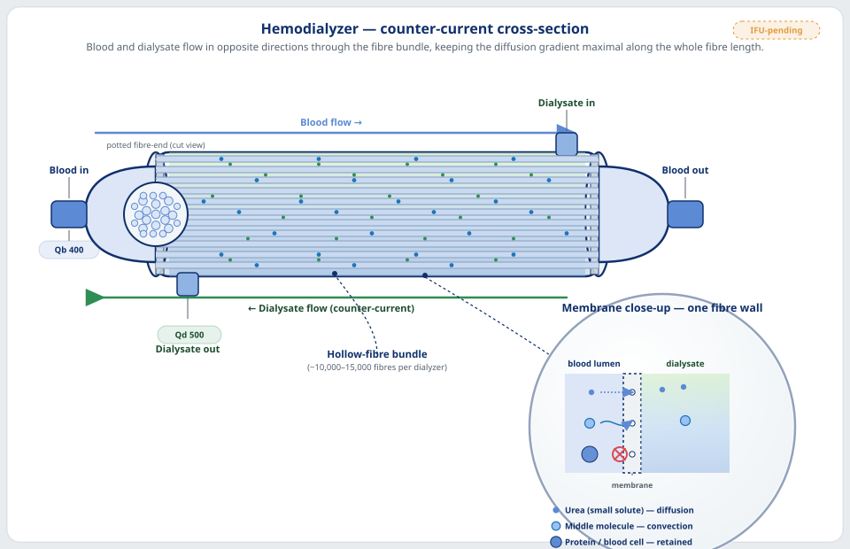
The argument, drawn honestlyاستدلال، صادقانه ترسیمشده
The clearance advantage is real and size-dependent — end-labeled bars, position/length encoding, every number citation-gated. Conventional HD adds no convective volume; high-volume HDF targets ≥23 L per session CONVINCE 2023 · PMID 37326323.مزیت پاکسازی واقعی و وابسته به اندازه است — میلههای برچسبدار، کدگذاری موقعیت/طول، هر عدد مستند. HD معمول حجم همرفتی نمیافزاید؛ HDF پرحجم هدف ≥۲۳ L در هر جلسه دارد CONVINCE 2023 · PMID 37326323.
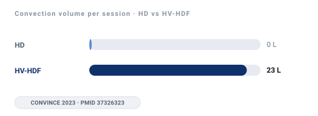
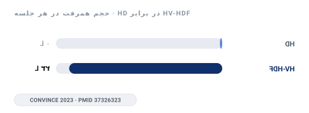
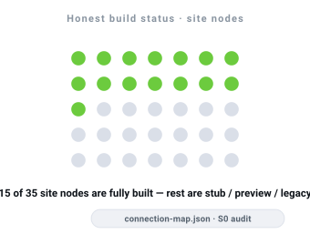
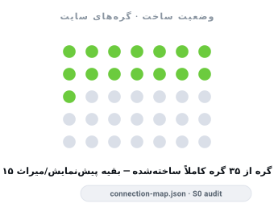
Blocked ISOTYPE array — a countable natural-frequency framing, never a bare percentage.آرایهٔ ایزوتایپ بلوکی — قاب فراوانی طبیعی و قابلشمارش، نه درصد خام.
Honest build statusوضعیت ساخت صادقانه
only C1 has a full multi-format courseفقط C1 دورهٔ چندقالبی کامل دارد| Content typeنوع محتوا | C1 | C2 | C3 | C4 | C5 | C6 |
|---|---|---|---|---|---|---|
| Guided courseدورهٔ راهنماییشده | Real | Stub | — | — | — | — |
| Infographics / videoاینفوگرافیک / ویدیو | Real | Stub | — | — | — | Real |
| 3D / interactive simشبیهسازی سهبعدی | Real | — | Real | Panel | Real | Real |
| Quiz moduleماژول آزمون | Real | Gap | — | — | Stub | Real |
| Mastery gateدروازهٔ تسلط | Gate | Stub | Gate | Panel | Gate | Gate |
| Branching caseمورد شاخهای | — | — | — | — | Real | — |
| Daily-5 cardsکارتهای روزانهٔ ۵ | Real | Real | Real | Real | Real | Real |
| Placement / credentialتعیین سطح / گواهی | Cross-competency · 7Q placement + 8Q credentialمیانشایستگی · تعیین سطح ۷ سؤالی + گواهی ۸ سؤالی | |||||
Site connection mapنقشهٔ اتصال سایت
Real graph · 35 nodes · 79 edges total · Tiers A–C shownگراف واقعی · ۳۵ گره · ۷۹ یال · لایههای A تا C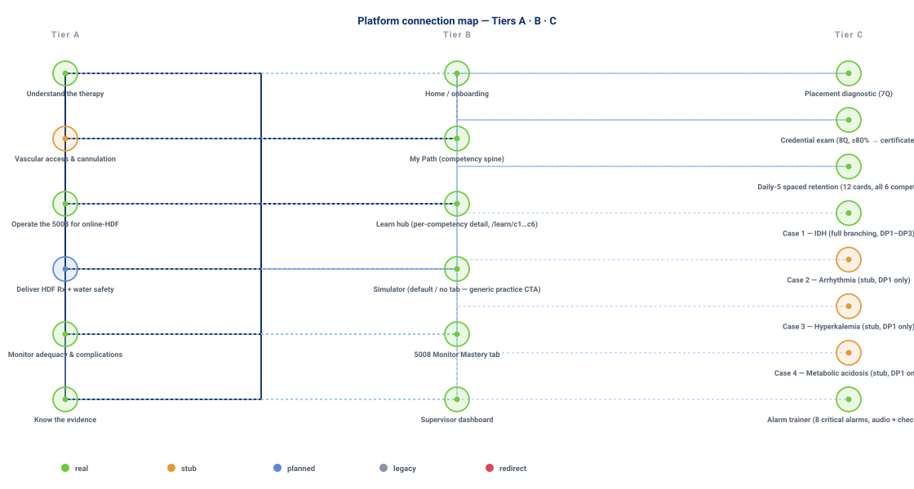
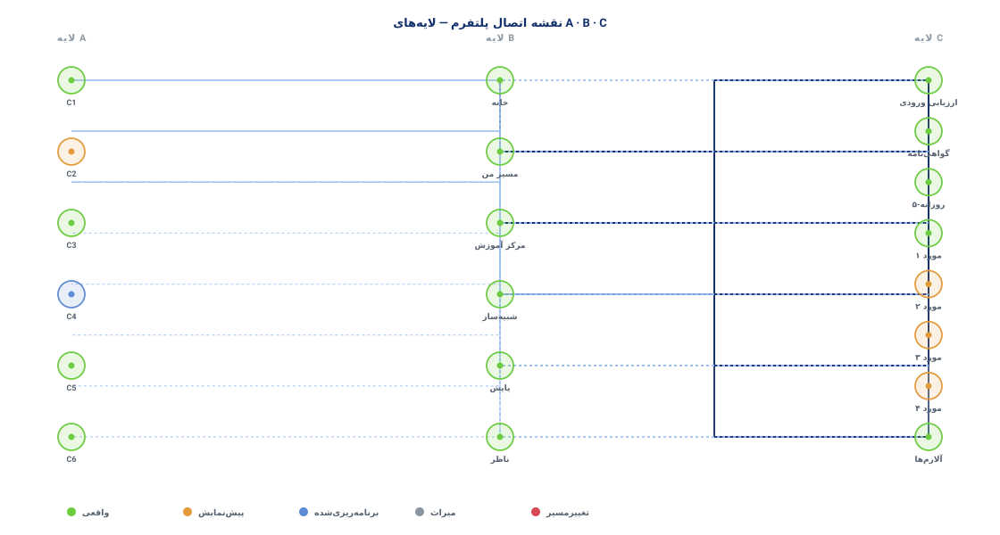